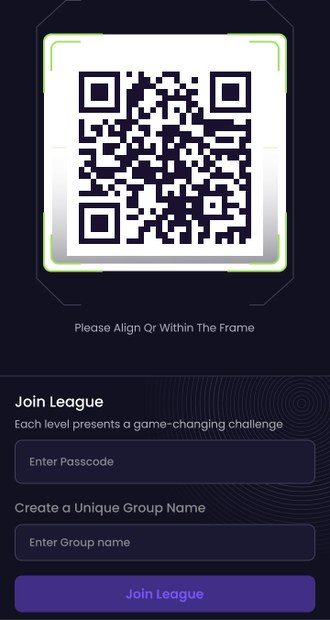
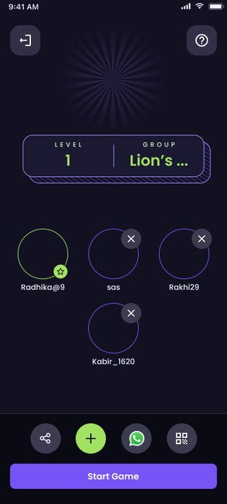
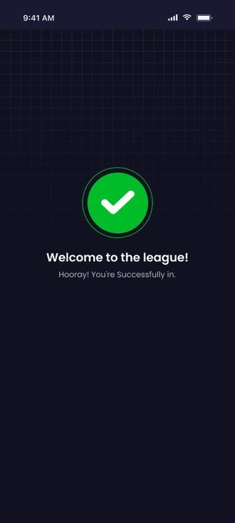
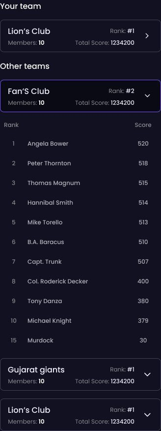

frolic wanted visibility: live gaming leagues in colleges and public places. the model was simple — a captain creates a team, players join under them, every score counts, and the top of the leaderboard takes the reward. the hard part was the first thirty seconds: getting a stranger in a crowd into a team before they lose interest.
shipped · designed in 2023at a live event, every signup step loses people: forms, app-store hunting, passcodes shouted over a crowd.
my answer, back in 2023: put a qr where the crowd already is. scan, land in the league, pick your team. five steps:




scan beats typing at a crowded venue. the join happens right where people stand.
public places are chaos. one accountable person per team, creating, inviting and starting the game, turns that chaos into a roster.
every person's points feed the team total, so nobody sits out. the reward at the top keeps the whole board playing.
this was my first big system at reliance fynd, and where i learned to trade opinion for evidence — usability testing across frolic and fan11 surfaced 20+ friction points that engineering and i fixed together. the leaderboard's v-1 → v-2 on this very board is that habit, visible.
a league in a public place is just onboarding with an audience. win the first thirty seconds and the rest plays itself.